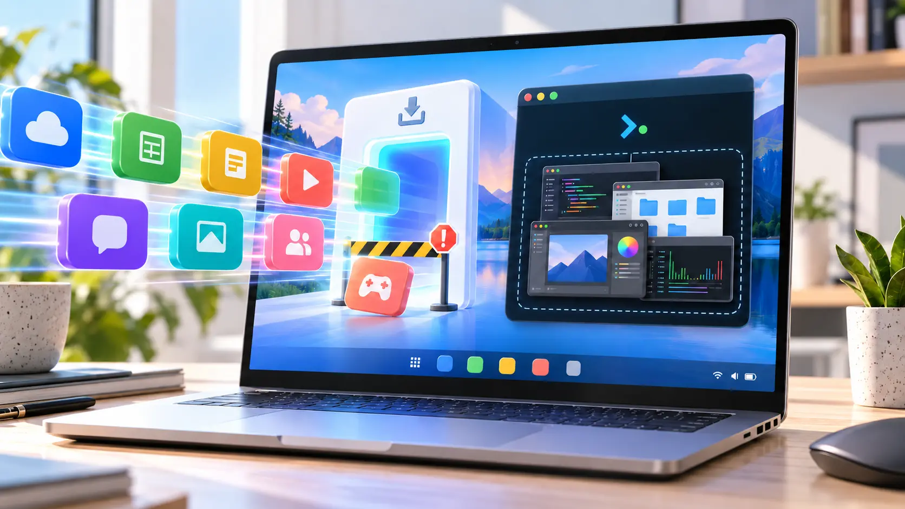

Computers · Field note 019
Googlebook launches with unfinished web and Linux app support
Google’s Android-based laptop platform can run both kinds of software, but early limits make the experience less flexible than Chromebook.

Googlebook is replacing ChromeOS with Android at the foundation, but some of Chromebook’s most useful flexibility has not made the move.
Google’s new laptop platform relies heavily on Android software and web apps. At launch, however, its Progressive Web App support is more restrictive than the system it succeeds, while its Linux environment is aimed primarily at developers rather than people looking for a conventional desktop-app experience.
The web limitation became visible with Slack. Googlebook can install compliant PWAs, but Slack’s web app does not meet that standard. ChromeOS works around cases like this by allowing users to install a website manually as a standalone app. Chrome on Googlebook does not yet offer the same option.
Google says manual web-app installation is coming to Googlebooks. Until it arrives, Slack can still run in a browser tab or through a shortcut, but it cannot behave like an independently windowed application.
Linux is present, not yet integrated
Linux support tells a similar story. Googlebook includes a Terminal app with access to a Debian command-line environment, giving developers a place to run tools, coding environments, and other Linux software.
Graphical Linux applications can run too, but Google says they are not the main focus of the initial release. The current experience does not match Chromebook’s mature integration, where installed Linux applications can appear alongside other software in the app drawer and open as individual windows.
Early testing cited by 9to5Google shows Linux interfaces grouped inside a single Terminal display rather than receiving their own Android windows or taskbar entries. Testers have also reported reliability problems with demanding applications such as GIMP. Documentation for setting up graphical Linux software remains limited.
A launch gap, not a dead end
Neither limitation makes Googlebook incapable. Most standards-compliant PWAs install normally, and the Debian environment remains valuable for command-line work. Google has also committed to bringing manual web-app installation to the platform and says it will share more about Terminal later.
The concern is what early buyers lose in the transition. Linux apps became a quiet strength of Chromebook because they filled gaps left by web and Android software. Googlebook’s Android foundation promises deeper phone integration, but it begins its life with a narrower path to desktop-class apps.
That can improve through updates. For now, people considering a Googlebook should verify that the web and Linux applications central to their workflow behave like real desktop software—not simply assume that every Chromebook capability carried over.